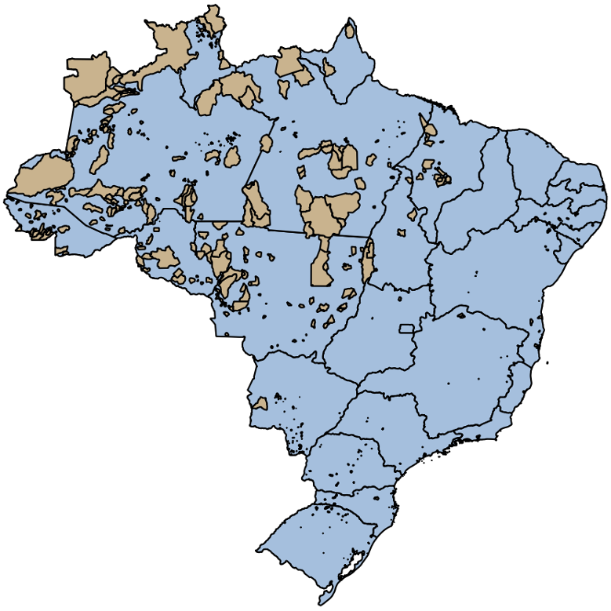
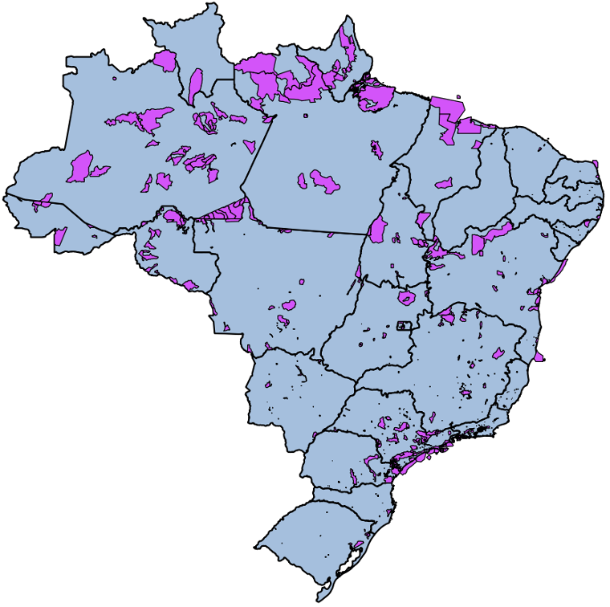
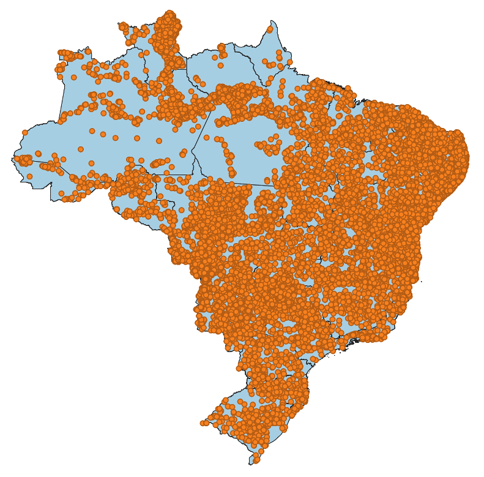
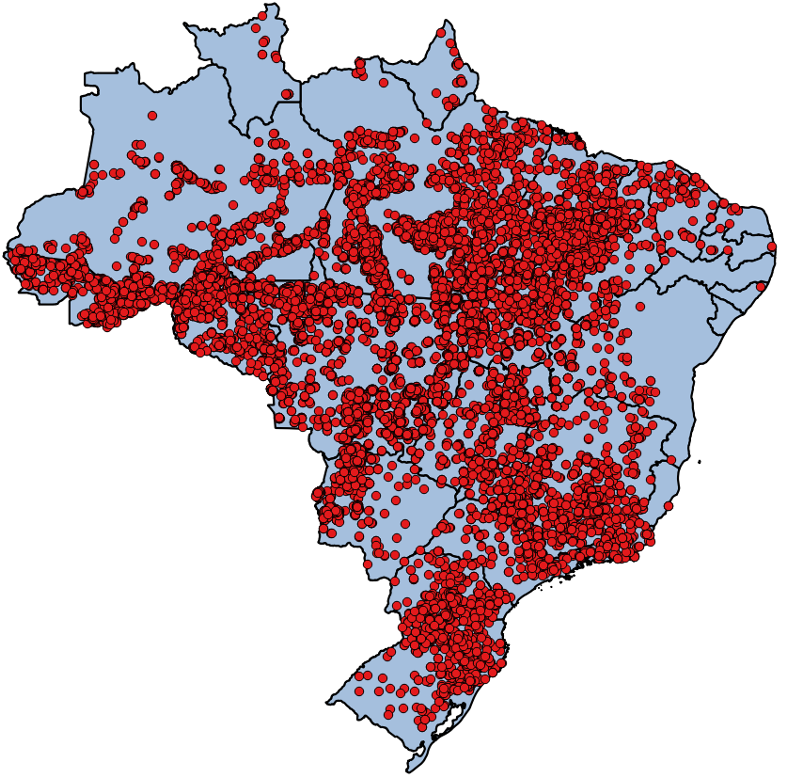

3.5.5. Junção Espacial
3.5.5.1. Carga de Dados - Terras Indígenas
Considere o conjunto ESRI Shapefile mostrado na Tabela 3.32, que contem os limites de terras indígenas no Brasil. Faça a carga desse conjunto de dados para o servidor PostgreSQL de acordo com as informações apresentadas nessa tabela.
 |
Terras Indígenas
Tipo Geométrico: MultiPolygon
|
Carga Dados:
Para converter este conjunto de dados do formato ESRI Shapefile para um arquivo contendo uma sequência de comandos SQL, vamos utilizar o comando shp2pgsql:
shp2pgsql -c -g "geom" -s 4674 -i -I -t "2D" -W UTF-8 terras_indigenas.shp public.terras_indigenas > terras_indigenas.sql
Para carregar o arquivo terras_indigenas.sql para um banco de dados PostgreSQL, utilize o psql, como mostrado abaixo:
psql -U postgres -h localhost -p 5432 -d bdgeo -f terras_indigenas.sql
3.5.5.2. Consulta 1
Consulta: Quais as áreas de terras indígenas no Estado do Tocantins?
Figura 3.42 - Junção Espacial - Terras Indigenas \(\times\) Unidades Federação.
Solução:
SELECT ti.*
FROM uf,
terras_indigenas AS ti
WHERE ST_Intersects(uf.geom, ti.geom)
AND uf.nome = 'TOCANTINS';
3.5.5.3. Carga de Dados - Unidades de Conservação
Considere o conjunto ESRI Shapefile mostrado na Tabela 3.33, que contem os limites das unidades de conservação no Brasil. Faça a carga desse conjunto de dados de acordo com as informações apresentadas nessa tabela.
 |
Terras Indígenas
Tipo Geométrico: MultiPolygon
|
Carga Dados:
Para converter este conjunto de dados do formato ESRI Shapefile para SQL utilizando o shp2pgsql, use o seguinte comando:
shp2pgsql -c -g "geom" -s 4618 -i -t "2D" -W UTF-8 unidades_conservacao.shp public.unidades_conservacao > unidades_conservacao.sql
Nota
Repare no comando acima que não iremos criar o índice espacial sobre a coluna geométrica, isto é, não incluímos a opção -I no comando acima.
Para carregar o arquivo unidades_conservacao.sql para um banco de dados PostgreSQL, utilize o psql:
psql -h localhost -p 5432 -d bdgeo -U postgres -f unidades_conservacao.sql
Transforme as coordenadas das geometria para o sistema de referência espacial formada pela projeção geográfica para LAT/LONG e sistema geodésico de referência SIRGAS 2000 (SRID 4674):
ALTER TABLE unidades_conservacao
ALTER COLUMN geom
TYPE GEOMETRY(MULTIPOLYGON, 4674)
USING ST_Transform(geom, 4674);
Agora, vamos criar um índice espacial sobre a coluna geom:
CREATE INDEX unidades_conservacao_geom_idx ON unidades_conservacao USING GIST ( geom );
3.5.5.4. Carga de Dados - Focos de Queimada (Janeiro de 2020)
Considere o conjunto ESRI Shapefile mostrado na Tabela 3.34, que contém focos de incêndio na vegetação entre o dia 01/01/2020 e 25/01/2020. Faça a carga desse conjunto de dados de acordo com as informações apresentadas nessa tabela.
 |
Focos de Queimada – 2020
Tipo Geométrico: Point
|
Carga Dados:
Para converter este conjunto de dados do formato ESRI Shapefile para SQL utilizando o shp2pgsql, use o seguinte comando:
shp2pgsql -c -g "geom" -s 4326 -i -t "2D" -W UTF-8 focos_2020.shp public.focos_2020 > focos_2020.sql
Nota
Repare no comando acima que não iremos criar o índice espacial sobre a coluna geométrica, isto é, não incluímos a opção -I no comando acima.
Para carregar o arquivo focos_2020.sql para um banco de dados PostgreSQL, utilize o psql:
psql -h localhost -p 5432 -d bdgeo -U postgres -f focos_2020.sql
Veja se o atributo com a data de observação (datahora) foi importado com o tipo correto: TIMESTAMP WITHOUT TIME ZONE. Caso não tenha sido, use o seguinte comando para acertar o tipo da coluna:
ALTER TABLE focos_2020
ALTER COLUMN datahora
TYPE TIMESTAMP WITHOUT TIME ZONE
USING datahora::timestamp without time zone;
Faça uma reprojeção das geometrias do foco:
ALTER TABLE focos_2020
ALTER COLUMN geom
TYPE GEOMETRY(POINT, 4674)
USING ST_Transform(geom, 4674);
Uma vez que iremos realizar consultas sobre a coluna datahora, vamos criar um índice sobre esta coluna:
CREATE INDEX focos_2020_datahora_idx ON focos_2020 ( datahora );
Também vamos criar um índice espacial sobre a coluna geom:
CREATE INDEX focos_2020_geom_idx ON focos USING GIST ( geom );
3.5.5.5. Consulta 2
Consulta: Quantos focos de incêndio na vegetação foram detectados em Unidades de Conservação Estaduais do Estado do Tocantins em 2020?

Figura 3.43 - Junção Espacial - Unidades Federação \(\times\) Focos de Queimada (Janeiro 2020).
Solução:
SELECT ucs.nome AS nome,
COUNT(*) AS total_focos
FROM focos_2020,
unidades_conservacao AS ucs,
uf
WHERE uf.nome = 'TOCANTINS'
AND ST_Intersects(uf.geom, ucs.geom)
AND ucs.jurisdicao = 'Estadual'
AND ST_Contains(ucs.geom, focos_2020.geom)
GROUP BY ucs.id,
ucs.nome
ORDER BY total_focos DESC;
3.5.5.6. Carga de Dados - Focos 2017/2018
Considere o conjunto ESRI Shapefile mostrado na Tabela 3.35, que contém focos de incêndio na vegetação dos anos de 2017 e 2018. Faça a carga desse conjunto de dados de acordo com as informações apresentadas nessa tabela.
 |
Focos de Queimada – 2017/2018
Tipo Geométrico: Point
|
Carga Dados:
Para converter este conjunto de dados do formato ESRI Shapefile para SQL utilizando o shp2pgsql, use o seguinte comando:
shp2pgsql -c -g "geom" -s 4326 -i -t "2D" -W UTF-8 focos_2017_2018.shp public.focos > focos.sql
Nota
Repare no comando acima que não iremos criar o índice espacial, isto é, não incluímos a opção -I no comando acima.
Nota
O comando acima levou cerca de 35 segundos em um notebook com disco comum e o servidor PostgreSQL com as configurações básicas.
Para carregar o arquivo focos.sql para um banco de dados PostgreSQL, utilize o psql:
psql -h localhost -p 5432 -d bdgeo -U postgres -f focos.sql
Nota
O comando acima levou cerca de 9 minutos em um notebook com disco comum e o servidor PostgreSQL com as configurações básicas.
Veja se o atributo com a data de observação (data_obser) foi importado com o tipo correto: TIMESTAMP WITHOUT TIME ZONE. Caso não tenha sido, use o seguinte comando para acertar o tipo da coluna:
ALTER TABLE focos
ALTER COLUMN data_obser
TYPE TIMESTAMP WITHOUT TIME ZONE
USING data_obser::timestamp without time zone;
Nota
O comando acima levou cerca de 32 segundos em um notebook com disco comum e o servidor PostgreSQL com as configurações básicas.
Faça uma reprojeção das geometrias da tabela foco para o SRID 4674:
ALTER TABLE focos
ALTER COLUMN geom
TYPE GEOMETRY(POINT, 4674)
USING ST_Transform(geom, 4674);
Nota
O comando acima levou cerca de 41 segundos em um notebook com disco comum e o servidor PostgreSQL com as configurações básicas.
Uma vez que iremos realizar consultas sobre a coluna data_obser, vamos criar um índice sobre esta coluna:
CREATE INDEX focos_data_obser_idx ON focos ( data_obser );
Nota
O comando acima levou cerca de 3 segundos com o parâmero maintenance_work_mem ajustado para uso de 4GB de memória RAM.
Também vamos criar um índice espacial sobre a coluna geom:
CREATE INDEX focos_geom_idx ON focos USING GIST ( geom );
Nota
O comando acima levou cerca de 47 segundos com o parâmero maintenance_work_mem ajustado para uso de 4GB de memória RAM.
3.5.5.7. Consulta 3
Consulta: Quantos focos de incêndio na vegetação foram detectados mensalmente em Unidades de Conservação Estaduais do Estado do Tocantins ao longo de 2017?
Solução:
Versão 1:
SELECT Extract(month from focos.data_obser) AS mes,
ucs.nome AS nome,
COUNT(*) AS total_focos
FROM focos,
unidades_conservacao AS ucs,
uf
WHERE uf.nome = 'TOCANTINS'
AND ST_Intersects(uf.geom, ucs.geom)
AND ucs.jurisdicao = 'Estadual'
AND ST_Contains(ucs.geom, focos.geom)
AND Extract(year from focos.data_obser) = 2017
GROUP BY mes,
ucs.id,
ucs.nome
ORDER BY mes ASC, total_focos DESC, nome ASC;
Versão 2:
WITH tocantins AS (
SELECT * FROM uf WHERE nome = 'TOCANTINS'
),
ucs AS (
SELECT unidades_conservacao.*
FROM unidades_conservacao,
tocantins
WHERE unidades_conservacao.jurisdicao = 'Estadual'
AND ST_Intersects(tocantins.geom, unidades_conservacao.geom)
)
SELECT Extract(month from focos.data_obser) AS mes,
ucs.nome AS nome,
COUNT(*) AS total_focos
FROM focos,
ucs
WHERE ST_Contains(ucs.geom, focos.geom)
AND Extract(year from focos.data_obser) = 2017
GROUP BY mes,
ucs.id,
ucs.nome
ORDER BY mes ASC, total_focos DESC, nome ASC;
3.5.5.8. Carga de Dados - Trechos Rodoviários
Considere o conjunto ESRI Shapefile mostrado na Tabela 3.36, que contem os trechos rodoviários do Brasil, ano de referência 2019. Faça a carga desse conjunto de dados de acordo com as informações apresentadas nessa tabela.
|
Trechos Rodoviários – 2019
Tipo Geométrico: MultiLineString
|

{kind=link}
Carga Dados:
Para converter este conjunto de dados do formato ESRI Shapefile para SQL utilizando o shp2pgsql, use o seguinte comando:
shp2pgsql -c -g "geom" -s 4674 -i -I -t "2D" -W UTF-8 rod_trecho_rodoviario_l.shp public.trechos_rodoviarios > trechos_rodoviarios.sql
Para carregar o arquivo trechos_rodoviarios.sql para um banco de dados PostgreSQL, utilize o psql:
psql -h localhost -p 5432 -d bdgeo -U postgres -f trechos_rodoviarios.sql
3.5.5.9. Consulta 4
Consulta: Quantos focos de incêndio ocorreram nas proximidades da rodovia BR-153 no mês de setembro de 2017?

Figura 3.44 - Junção Espacial - focos de incêndio nas proximidades da rodovia.
Solução:
SELECT COUNT(*) as total_focos
FROM (
SELECT DISTINCT focos.id
FROM focos,
trechos_rodoviarios AS trechos
WHERE ST_DWithin(trechos.geom, focos.geom, 1000.0 / 111000.0)
AND codtrechor = 'BR-153'
AND focos.data_obser >= '2017-09-01'
AND focos.data_obser < '2017-10-01'
) as focos_sel;
3.5.5.10. Consulta 5
Consulta: Quais os municípios vizinhos de Ouro Preto em Minas Gerais?

Figura 3.45 - Junção Espacial - Municípios vizinhos a Ouro Preto.
Solução:
SELECT m2.nome AS vizinho, m2.geom AS geom
FROM municipios AS m1,
municipios AS m2
WHERE ST_Touches(m1.geom, m2.geom)
AND m1.nome = 'OURO PRETO'
AND m2.nome != 'OURO PRETO';
Nota
As consultas vistas nesta seção também são conhecidas por Spatial Join.